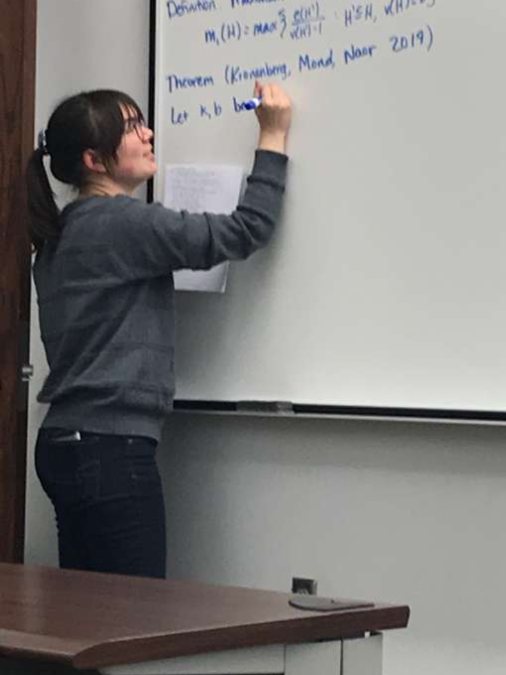

Teaching
I believe in learning by doing, in leading by example, and that everyone can learn math. My primary goal in teaching is to create accessible spaces where students can learn to harness the power of mathematics in a way that is relevant to them.
I have been teaching undergraduate courses as instructor of record since 2018. Prior to that, I worked in various capacities as a teaching assistant, tutor, and mentor.
Current Teaching:
Current students can access course information on Canvas.
Essentials of Calculus, Math 130 (2 sections)
Multi-Variable Calculus, Math 145 (1 section)
Past Courses:
Calculus II at UNL (Math 107): spring 2022 (1 section, for WHT scholars)
Math Modeling at UNL (Math 302): fall 2021 (1 section, for future elementary school teachers)
Trigonometry at UNL (Math 102): fall 2020 (2 sections, associate course convener), spring 2021 (1, AC)
Contemporary Mathematics at UNL (Math 203): spring 2019 (1 section), spring 2020 (1, for journalism students), fall 2022 (1 for journalism students, 1 for WHT and TRIO scholars)
College Algebra and Trigonometry (what a deal!) at UNL (Math 103): fall 2019 (1 section)
College Algebra at UNL (Math 101): fall 2018 (1 section)
Calculus II recitations at UNL (Math 107r): fall 2017 (2 sections), spring 2018 (2), and summer 2018 (1)